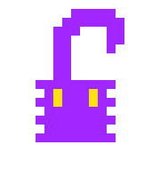

As if on cue, one jumps out of some bushes. It's small, and you know enough about Mega Monsters to know that it's called a Squiddo, and rarely seen out of water.
You stocked up on bait, however, and know that Squiddos like fish. You can lure it or run away.

This is what the Squiddo looks like.